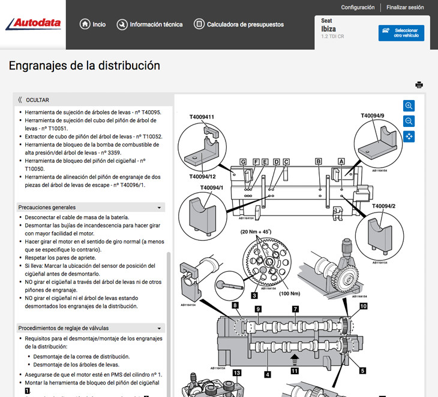
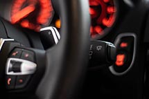
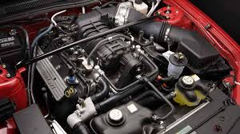
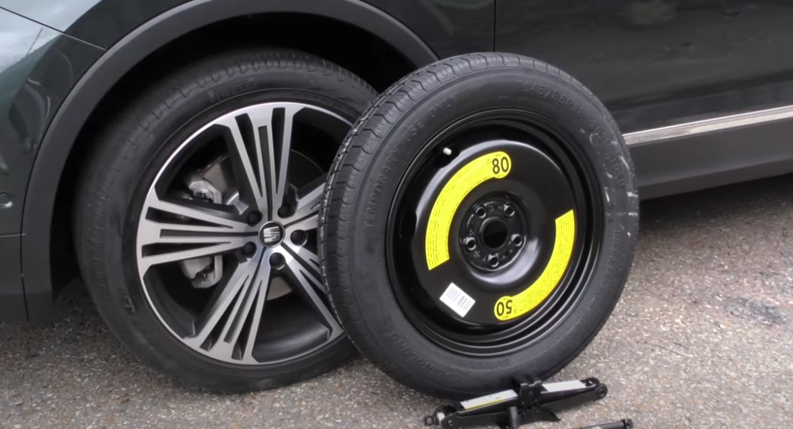

MULTIMARCAS
Taller Multimarcas
Talleres Osman es un taller multimarca.
Gracias a nuestra maquinaria especializada en diagnósis del automóvil y a la potente base de datos que nos brinda AUTODATA del cual somos usuarios registrados, podemos detectar las averías, así como de informar de todos los intervalos de sustitución de piezas y mantenimientos de vehículos de las principales marcas de vehículos tanto europeos, como asiáticos.Igualmente disponemos de otra página llamada AVERIAS RESUELTAS la cual contiene una gran base de datos sobre averías ya resueltas, con lo que ahorramos mucho tiempo en los diagnósticos
CONSEJOS
Revisa el nivel de aceite y líquidos regularmente.
Realiza un mantenimiento regular.
Conduce con suavidad,Conducir de forma brusca y acelerar de forma violenta puede dañar el motor.
Usa combustible de calidad: Usa combustible de calidad para evitar dañar el motor y mantener su buen funcionamiento.
Cuida la batería: Comprueba la batería regularmente y asegúrate de que esté bien sujeta y no haya corrosión en los bornes.
RECOMENDACIONES
Si tenemos que marcar la atención de un elemento indispensable de nuestro vehículo,
junto con el motor y los frenos probablemente tengamos que elegir los neumáticos.
Razones no faltan para prestarle todo el cuidado y la atención necesaria a estos componentes:son la base y nuestro principal contacto con el asfalto,por lo que de sus características y composición, se podrá derivar una conducción perfecta.
CUIDADOS DEL VEHICULO
Cambio de Aceite:
Nada alimenta mejor a tu motor que un aceite de calidad. Cambiar el aceite es esencial para mantener el rendimiento del motor.
Frenos: Detén el Desgaste, No el Viaje:
Si escuchas chirridos, sientes vibraciones o notas que la distancia de frenado ha aumentado, es hora de una revisión.
Neumáticos: La Conexión con el Asfalto:
Verifica la presión regularmente.Unos neumáticos bien cuidados contribuyen a la eficiencia del combustible.
CAMBIO RUEDA DE REPUESTO
Antes de iniciar un viaje, además de comprobar que tu coche se encuentra en las mejores condiciones de mantenimiento, es importante saber si dispone de rueda de repuesto o, en su lugar, tiene un kit antipinchazos, algo cada vez más habitual en los nuevos coches.
En el caso de que sí disponga de rueda de repuesto,lo primero que tienes que hacer es comprobar que llevas todo lo necesario para ponerte manos a la obra.
Si es así pincha en este ENLACE.